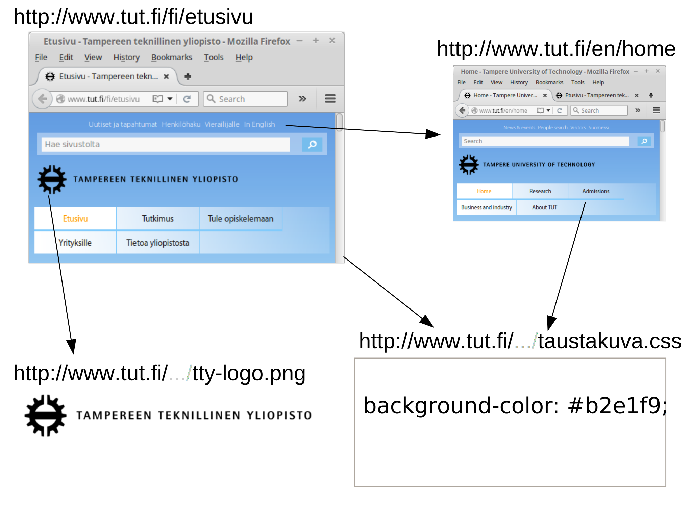
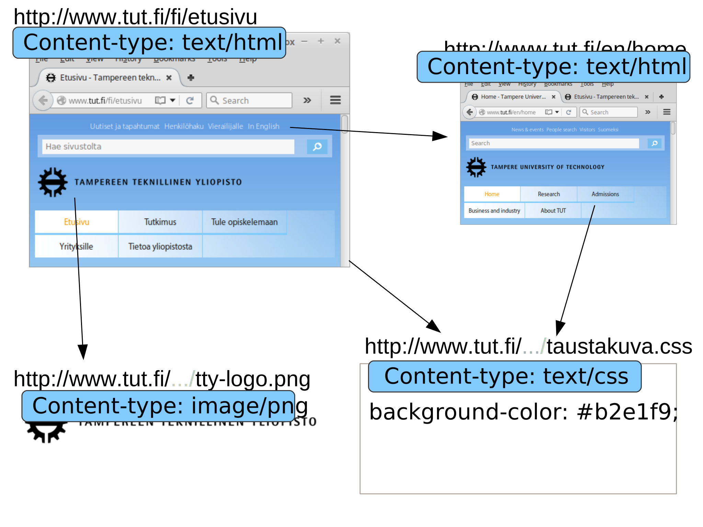
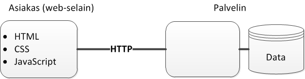
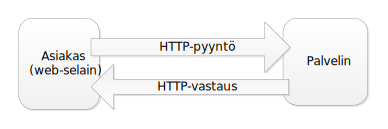
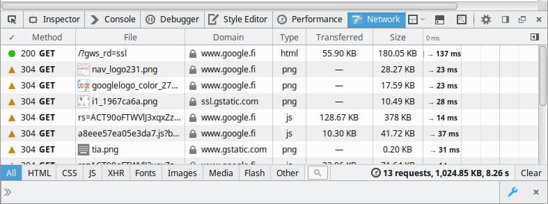

World Wide Web (WWW, Web) on web-resurssien muodostama verkko
Web-resurssit voivat olla HTML-sivuja, JavaScript-ohjelmia, datatiedostoja, kuvia, videoita tai lähes mitä tahansa muuta
Kaikilla web-resursseilla on URL (Uniform Resource Locator), jonka avulla resurssiin voidaan viitata


Internet on maailmanlaajuinen "verkkojen verkkojen", jossa dataa siirretään TCP/IP-protokollalla
Internetissä voidaan siirtää monenlaista dataa, kuten sähköposteja, verkkopeliliikennettä ja web-resursseja
Web-resurssien siirtoon käytetty protokolla on nimeltään HTTP (ja HTTPS ja FTP), joka puolestaan hyödyntää TCP/IP:tä
Web siis "toimii Internetin päällä"
1969: ARPANET
1983: TCP/IP
1989: World Wide Web
1995: JavaScript
1996: CSS
1998: Ajax
2011: HTML5
1990-luku
2000-luku
2010-luku
Web application is a client-server software application in which the client (or user interface) runs in a web browser.
Web-sivu: käyttäjä hakee tietoa
Web-sovellus: käyttäjä suorittaa toimintoja
Rajanveto epätarkkaa
(verrattuna natiiviin työpöytä-/mobiilisovellukseen)
Käytettävissä kaikkialla
Sovellusten päivittäminen helppoa
Turvallisempi suorittaa kuin natiivi sovellus
Käyttäjäkokemus?
Käyttö vaatii verkkoyhteyden
Omanlaisensa tietoturvaongelmat
Sovellusten kehitys
Kaikki nämä ongelmat ovat vähenemään päin web-teknologioiden kehittymisen myötä.
HTML
CSS
JavaScript
HTTP

Palvelinpää (Backend)
Näiden välillä kommunikoidaan HTTP-protokollalla
HyperText Transfer Protocol
Protokolla asiakkaan (usein web-selain) ja palvelimen väliseen kommunikaatioon
Tekstipohjainen
Tilaton

HyperText Markup Language
Merkkauskieli web-sivun sisällön kuvaamiseen
<!DOCTYPE html>
<html lang="fi">
<head>
<meta charset="utf-8">
<title>Hello World</title>
</head>
<body>
<h1 class="moi">Moi</h1>
<p id="eka">Eka!</p>
<p>Toka!</p>
</body>
</html>Cascading Style Sheets
Kieli web-sivun ulkoasun määrittämiseen
p { /* elementin nimi */
background-color: skyblue;
}
.moi { /* elementin luokka */
color: orange;
}
#eka { /* elementin id */
border: 1px solid black;
padding: 10px;
}<!DOCTYPE html>
<html lang="fi">
<head>
<meta charset="utf-8">
<title>Hello World</title>
<link rel="stylesheet"
type="text/css"
href="style.css" />
</head><body>
<h1 class="moi">Moi</h1>
<p id="eka">Eka!</p>
<p>Toka!</p>
</body></html>Ohjelmointikieli web-sivujen toiminnallisuuden toteuttamiseen
Dynaamisesti tyypitetty
Prototyyppipohjainen
First-class functions
function foo(p) {
return p * p;
}
var x = foo(6);
var li = [1, 2, 3].map(foo);
console.log("Moi");<!DOCTYPE html>
<html lang="fi">
<head>
<meta charset="utf-8">
<title>Hello World</title>
<link rel="stylesheet"
type="text/css"
href="style.css" />
</head>
<body>
<h1 class="moi">Moi</h1>
<p id="eka">Eka!</p>
<p>Toka!</p>
<script src="script.js">
</script>
</body>
</html>function pClicked(event) {
var p = event.srcElement;
p.classList.add('eka');
}
var ps = document.
getElementsByTagName('p');
for(var i=0; i<ps.length; ++i){
var p = ps[i];
p.onclick = pClicked;
}Web-selaimissa on kehitystyökaluja, joilla voi tarkkailla HTTP-liikennettä, sivustojen lähdekoodeja (HTML, CSS, JavaScript, ym.)
Firefoxissa kehitystyökalut saa auki pikanäppäimellä Ctrl+Shift+C

Avaa web-sivu osoitteessa http://www.w3.org ja yritä selaimen kehitystyökalujen (erityisesti Network-välilehti) avulla löytää vastaukset seuraaviin kysymyksiin:
Mitä resursseja selain lataa kun sivuston avaa?
Minkä tyyppisiä resursseja?
Mikä resurssi ladataan ensimmäisenä?
Mistä selain tietää mitä resursseja pitää ladata sen jälkeen kun alkuperäinen http://www.w3.org -resurssi on ladattu?